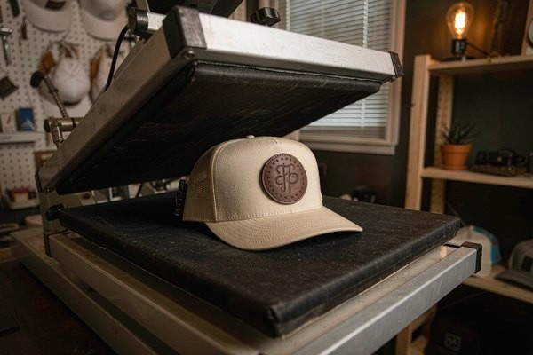
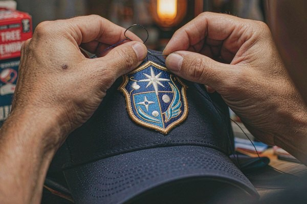

Hat Patches: The Ultimate Cap Branding Guide
A cap is the hardest canvas in the apparel world — curved, seamed, and only about two and a half inches of usable real estate up front. This guide covers hat patches from every angle: which patch constructions actually live on a curved crown, where they go on caps, truckers, beanies, and buckets, how big each position can go, and the attachment method that survives years of sweat and sun.

1. Why Patches Beat Direct Embroidery on Caps
Anyone who has ordered direct-embroidered caps knows the pain: minimums of 24 to 48 pieces per design, digitizing fees for every artwork, and a hard ceiling on detail because the front panel is small and seamed. Hat patches flip that economics. One patch design can be produced in any quantity, held in stock, and applied to caps as they sell — which is exactly why every major workwear, outdoor, and streetwear brand moved to the patch-hat model.
The quality argument matters just as much. A patch is stitched on a flat frame at the factory, where tension is perfect and detail is razor sharp. Direct embroidery on a curved, bumpy crown forces the machine to fight the surface, which is why small text on direct-embroidered caps so often looks crushed. With a patch, the crisp result you approved on the proof is the result you get on every single cap.
There is also a structural reason. The classic baseball cap front panel is bounded by seams on both sides and a buckram or foam insert behind it. A thin patch flexes with the crown; a dense block of direct stitching can pucker the panel or jam against the seam. Patches forgive the geometry. Caps don't.
2. The Five Patch Types That Work on Headwear
Not every patch construction suits a curved, sweat-soaked crown. These five do, and each has a lane:
| Patch Type | Best For | Look on a Cap | Watch Out For |
|---|---|---|---|
| Embroidered (flat) | All-around branding, outdoor and workwear caps | Textured, classic, dimensional | Ultra-fine text below 4 mm height |
| Embroidered 3D puff | Sports logos, bold single-letter marks | Raised foam core, chunky and loud | Works only with simple shapes, 1–2 colors |
| Leather | Premium caps, trucker hats, lifestyle brands | Debossed logo, matte, expensive feel | Needs heat press or rivet, not needle-friendly |
| PVC / silicone | Tactical caps, outdoor and marine use | Rubberized 3D, waterproof, modern | Stiffer feel; sew or mold-in a channel |
| Woven | Photographic or high-detail artwork | Flat, smooth, fine detail | Less dimensional than embroidery |
3D puff deserves a special note because it owns the cap world. The technique sandwiches a layer of foam under the stitching; the needle pierces the foam and the excess is trimmed away, leaving a raised, cushioned logo you can feel with a fingertip. It only works with bold, simple artwork — think athletic block letters and animal silhouettes, not thin script or gradients. If your logo is detailed, flat embroidery or a woven patch is the honest choice.
Leather plays the premium lane. A leather patch with a heat-debossed logo on the front of a trucker hat has become the uniform of craft breweries, barbershops, and outdoor brands for a reason: it photographs beautifully and ages into a patina customers love. If you're weighing materials for a full apparel line, our patch backing types guide breaks down how each backing behaves on different garments.

3. Placement and Sizing: The Numbers That Matter
Hat branding lives and dies on proportions. The front panel looks big until you put a patch on it — then every millimeter shows. Use these field-tested ranges (full measurement theory is in our patch placement guide):
| Position | Patch Width | Center Height From Brim | Notes |
|---|---|---|---|
| Structured cap front | 2.0–2.5 in | 2.0–2.25 in | Stay inside the side seams; centered on panel |
| Unstructured dad hat | 1.75–2.25 in | 2.0 in | Soft crown = lighter patch, avoid heavy PVC |
| Trucker hat front | 2.25–3.0 in | 2.25 in | Mesh back means front foam panel carries the patch |
| Cap side (wear left) | 1.0–1.5 in | 1.5 in above brim | Great for secondary marks and year codes |
| Beanie fold | 1.5–2.0 in wide | Centered on fold | Sew through fold only; test stretch |
| Bucket hat front | 2.0–2.5 in | 2.5 in above brim seam | Soft crown again — sew-on strongly preferred |
Two rules hold across every style. First, width beats height: a wide, low patch reads as premium, while a tall patch creeps toward the crown seam and looks cramped. Second, weight matters on unstructured caps — a heavyweight leather or PVC patch on a floppy cotton dad hat drags the panel down and distorts the crown. Match the patch to the hat, not just the logo to the patch.
4. Attachment Methods: What Actually Survives a Curved Crown
Hats are the worst-case scenario for adhesives. They bend, they sweat, they get rained on, and they live in the back of trucks. Here is how each attachment honestly performs:
Sew-on is the champion. A stitched patch becomes part of the hat — it will outlast the fabric around it. The technique is identical to our sew-on patches guide: a short running or lock stitch around the merrowed border, working slowly around the curve of the panel. On caps, hand-sewing is genuinely easier than machine work because the crown won't fit under a normal machine arm. Ten minutes of patience buys a decade of wear.
Heat press works, with conditions. Iron-on backing needs roughly 150 °C and firm, even pressure — achievable on a flat cap front panel with a curved-element press or a small hand iron pressed into a towel-shaped cradle. The risk zone is the edges: curved crowns lift adhesive borders first. If you go iron-on, add a securing stitch along the top edge and the story changes completely. Our adhesive patch guide covers when temporary holds are acceptable — sample runs and promo hats, mostly.

For leather patches, the press is the only way. Debossed leather patches are attached with industrial heat-press adhesive or with two rivets at the corners. Rivets add a rugged, intentional detail that suits workwear brands; adhesive-only leather patches are fine for fashion caps that won't see hard use. Never hand-stitch thick leather to a cap — the panel will pucker around every stitch.
PVC patches want a stitched channel. The clean method is sewing through a molded-in sewing channel at the patch edge, keeping stitches invisible behind the rubber border. Super-gluing a PVC patch onto a cap buys you exactly one hot car ride before it releases.
5. Design Tips for a Two-Inch Canvas
A patch that dazzles at 10 inches on a jacket back can turn to mush at 2 inches on a cap. Design for the actual size:
- Cut the elements. A cap patch survives with one icon and one word. Two icons and a tagline is a keychain, not a hat patch.
- Respect the 4 mm text floor. Below roughly 4 mm of letter height, embroidered text fills in. If your wordmark is smaller, go woven or enlarge the patch.
- Outline everything. A dark merrowed or satin-stitch border separates the artwork from the hat color — a navy patch on a navy cap without a border is invisible at ten paces.
- Design for the curve. Keep critical detail out of the top and bottom 15% of the patch; the crown's curve compresses those zones visually.
- Thread choice changes everything. Rayon gives a premium sheen for fashion caps, polyester shrugs off UV for outdoor brands, and metallic thread adds a flash that reads well at small scale — the tradeoffs are laid out in our thread types guide.
- Proof at real size. Insist on a photo of the stitched sample held against an actual cap, not a flat mockup. The curve is the test.
Minimal artwork wins on headwear — if your starting point is a full-color company logo, our logo-to-patch conversion guide shows exactly what to simplify first.
6. Care: Keeping Patch Hats Alive
Patch hats die in dishwashers and dryer heat, not in daily wear. Hand-wash in cool water with mild detergent, spot-clean the patch itself, and air-dry over a rounded form — a coffee can is the industry's least glamorous secret weapon. Never iron directly over an embroidered or PVC patch; if the cap needs pressing, do it from the inside. Embroidered and woven patches shrug all of this off. Leather wants an occasional dab of conditioner and PVC wants nothing at all beyond a rinse.
Frequently Asked Questions (FAQ)
Q1: What size should a front hat patch be?
For a standard structured cap, 2.0 to 2.5 inches wide, centered about 2 inches above the brim and well inside the side seams. Wider than 3 inches starts swallowing the panel; smaller than 1.75 inches reads as timid on structured crowns.
Q2: Can you iron a patch on a hat at home?
On a flat-front structured cap, yes — cotton setting, firm pressure, a pressing cloth, and press from both sides. On unstructured or mesh-heavy caps the adhesive rarely bonds reliably around the curve; sew it instead, or iron first and add a locking stitch around the border.
Q3: What patch type is best for a trucker hat?
A 2.25–3 inch leather patch with a debossed logo is the modern classic, and embroidered patches with 3D puff lettering are the sports-culture staple. Both mount cleanly to the foam front panel; mesh backs can't hold stitching, so keep all attachment on the front panel.
Q4: How do you attach a leather patch to a hat?
Industrial heat press with the adhesive the patch maker supplies, or two rivets for a rugged workwear look. Household irons struggle to reach even pressure on curved panels, so for a branded run use a press; for one-off hats, a cobbler or a local print shop with a cap press will do it cheaply.
Q5: Can a patch be removed from a hat without ruining it?
Sewn patches leave stitch holes, so removal is a rebranding operation, not a clean swap. Heat-activated patches on cotton panels can often be lifted with careful reheating and a plastic scraper, with minor adhesive residue left behind. If you plan to change designs seasonally, order patches with iron-on backing and accept the hybrid sew-and-press method for durability.
Conclusion: Match the Patch to the Crown
Great patch hats come from three boring decisions made in the right order: a patch construction that suits the canvas, a size that respects the panel, and an attachment that matches how the hat will actually be treated. Get those right and even a two-inch patch does the branding work of a billboard — customers reach for the hat first, and the hat sells the brand every time it leaves the house.
Ready to put your logo on a crown? We manufacture embroidered, 3D puff, woven, leather, and PVC patches with no minimum order, free digital proofs in 12 hours, and worldwide shipping. Request a free quote and we'll recommend the exact patch-and-attachment combo for your caps — or explore our size guide to spec every position before you order.